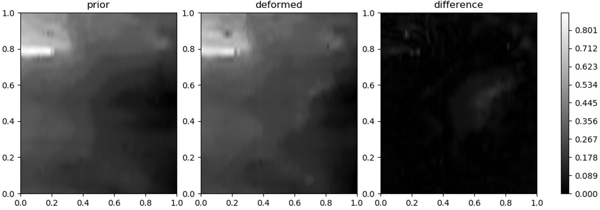
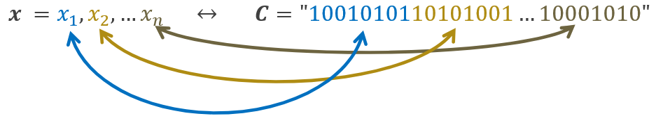
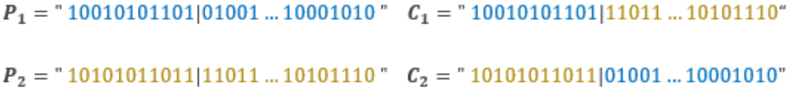
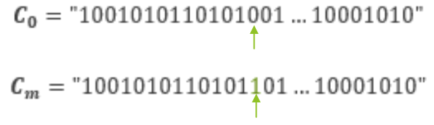
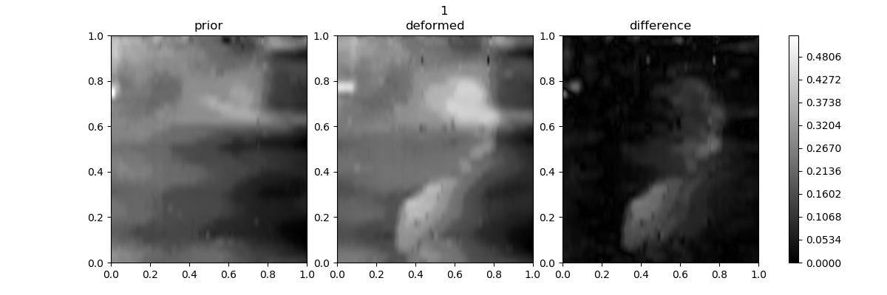
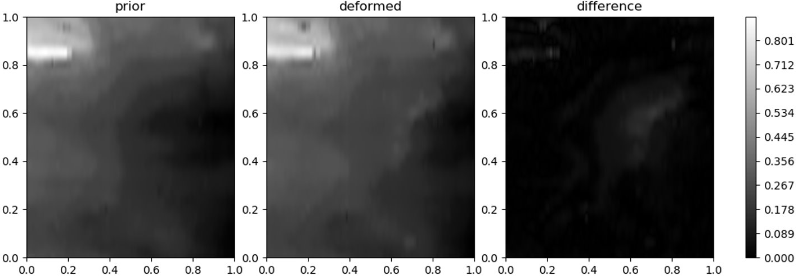
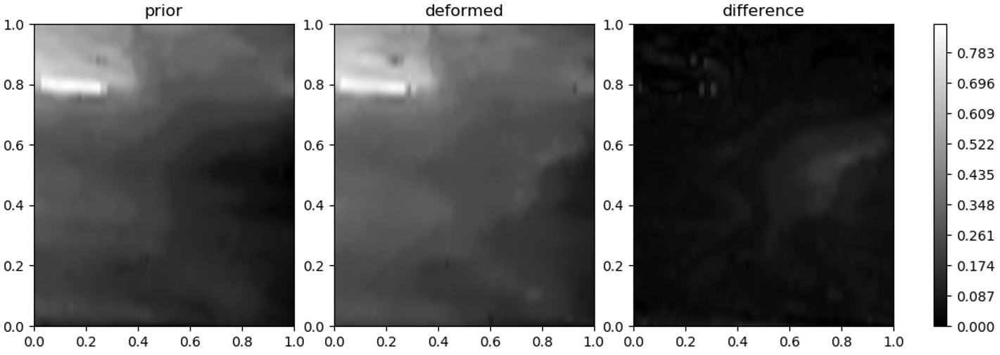

Quick Note
This page is an adaptation of a page that me and a peer wrote for my Artificial Intelligence (CSCE 580) course at the University of South Carolina. This paper can be found [HERE] for those curious enough to read it. However, almost all of the information detailed within said paper will be in this page as well, so unless you're just dying of curiosity, there isn't really a reason to read it. Also, the paper assumes prior knowledge whereas this page assumes a reader with minimal computer science knowledge.
Background
My junior year, I decided to take a class on Artificial Intelligence (CSCE 580). I assumed it would be interesting and that I would find some motivation to continue the computer science field. I don't think I could be more wrong. The class was extremely bland, and I don't feel like I learned much at all. The one interesting thing, however, was the final project. I worked with a graduate student who had already begun the project but hadn't gotten too far. For his project, he has an image of a sheet of metal on a table that is then converted into a height map using a laser. After this, the metal plate is then struck with some sort of impact, and another scan is taken. This results in two images: one that is the unaltered metal plate and another one that is the same plate but after a damage event. Our goal was to isolate the damage that the plate took. In other words, find the difference of the images. However, aligning these images by hand is tedious and wouldn't be very practical. Since this is an AI class, you can only guess what we decided to do. Here is an example of this alignment.
Genetic Algorithms
The best way we sought to do this was through a genetic algorithm. In case you're unfamiliar, a genetic algorithm is an optimization algorithm. Given some scoring function, it will either try to minimize or maximize that function. For us, we needed the difference to be as low as possible, so we were using it in the form of minimzation. A genetic algorithm differs from other optimization algorithms through the use of chromosomes and alleles. Let's say we have some sort of scoring function f(x1, x2, x3, ..., xn). Instead of inputting these separate values into the function, we can instead append them together to form what is known as a chromosome. Therefore, we have c0 = x1|x2|x3|...|xn. A better example can be shown in the image below. In this image, you can see that each input variable corresponds to a section in the chromosome.
The next important topic in genetic algorithms comes in the form of crossovers. A crossover occurs when two chromosomes swap sections with one another, as shown in the image below.
Apologies for the blurriness, but I'm not bothered enough to fix it. However, you can see here that P1 and P2 are swapping sections with each other to produce two children: C1 and C2. This can usually transcend allele boundaries, but for our project, we made it so that we would only swap entire alleles or none at all.
The final thing to talk about before we get into our project is mutation. Mutation is simple really. Every generation, a single bit has the chance to swap to the opposite vale. For an example, see the image below.
Again, sorry for the blurriness, but I really don't care. In this case, the 14th bit is swapping from a 0 to a 1. This is in an attempt to keep the system from going sterile and not producing any unique children.
Breeding Specifics
For each breeding generation, we used a pool of 80 potential configurations (80 different chromosomes). Out of these 80, approximately 40% of the lowest scoring participants were culled (removed from the pool). This left us with around 50 total candidates. Out of these 50, the top 10% were considered the elites, and they were the ones that would breed with the remaining population. This breeding produces 80 more configurations that will then become the next generation.
This process of using the elites to breed is called elitism (go figure). The reason for using this method is to try to obtain convergence faster. For those who are unfamiliar, convergence is simply the term used to describe the closing on a minimum/maximum value. In this case, when I refer to convergence, I am referring to how fast the system reaches the ideal set of alleles to get the best possible score in the scoring function. Now that you know how our breeding is done, we can look at the actual implementation.
Generation 1 Implementation
For our first attempt at this problem, we decided to go with 8 alleles, each 8 bits in size. This results in a 64 bit string that we can use for input into our evaluation function (which I will not go into here). The alleles in order are shown below.
- Cropping distance from the left side of image one
- Cropping distance from the right side of image one
- Cropping distance from the top of image one
- Cropping distance from the bottom of image one
- Cropping distance from the left side of image two
- Cropping distance from the right side of image two
- Cropping distance from the top of image two
- Cropping distance from the bottom of image two
From this, we were able to sort of shift around viewports on each of the images and calculate the root mean square error (RMSE) for the scoring function. However, one issue that we found with this was that the RMSE wasn't exactly a good representation of what we were looking for. In the image below, there is a low RMSE, but there is still a lot of noise in the difference image, and the damage isn't perfectly isolated.
To remedy this issue, we decided to implement the minimization of variance within our scoring function as well. After this trial, we considered generation 1 of our code to be complete and moved on to the second generation. To get decent results, the genetic algorithm ran for around 12 hours, but we weren't satisfied with those results.
Generation 2 Implementation
For generation 2, our main goal was not only to fix the variance issue but to also reduce the time it took to find convergence. To fix the variance was simple. All we needed to do was add it to the scoring function and then attempt to minimize it. We kept the alleles the same from the previous generation as well as the culling and breeding process, so the only thing that changed was the scoring function. Adding in this change immediately reduced the convergence time. It went from around 12 hours to about 4.5 hours. The image below was generated from this generation of the algorithm.
As we can see, the image above has less noise going on. This alone was enough to warrant a huge success, but we still thought that there was something we could do to make it better. As such, we decided to change more to attempt to get better convergence.
Generation 3 Implementation
In the third iteration of this project, a lot was changed. The only thing that stayed consistent during this stage was the scoring function (although it was adapted to address the allele changes below). The most noticeable change was the chromosome changes. Up until this point, we were simply using a viewport that was translated and scaled. However, we wanted to implement rotation of said viewport. As such, we had to develop this new system of alleles.
- Distance from the bottom of image one
- Distance from the left of image one
- Rotation of the viewing box of image one
- Diagonal length of the viewing box of image one
- Distance from the bottom of image two
- Distance from the left of image two
- Rotation of the viewing box of image two
- Diagonal length of the viewing box of image two
In the image above, a1 represents allele 1, a2 represents allele 2, a3 represents allele 3, and a4 represents allele 4. The same structure is used for alleles 5-8, but it is on the altered image rather than the original one.
With this implementation, our runtime went down from 4.5 hours to around 3 hours. This wasn't a very large change, so we were relatively unhappy with it. We realized that the best course of action would probably be to speed up image processing. To do this, we decided to only sample every 4th pixel and then interpolate one or two pixels in between. With this change, our runtime went from 3 hours down to around 40 minutes! At this time, we were ecstatic, and we decided to call it success here. An image generated by this iteration of the algorithm is shown below.
As we can see, the algorithm correctly found the damage event on the right side of the image. The variance is also better from the first generation on average, and there is only a slight bit of noise in the top left corner. Overall, we were fairly happy with our outcome of the project as we achieved what we wanted to.